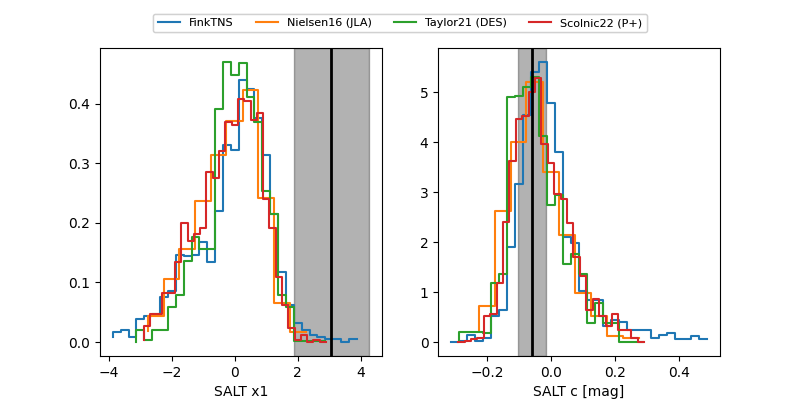

TNS: 2025xpd
YSE: 2025xpd
2025xpd (yse,tns)
PS25hnc (panstarrs)
equatorial (ra, dec) = (261.0838,+3.60113)
galactic (l, b) = (25.9852,+20.98668)

last ps1::g=19.70, ps1::i=20.20, ps1::r=19.80
7 ps1::g, 2 ps1::i, 6 ps1::r detections